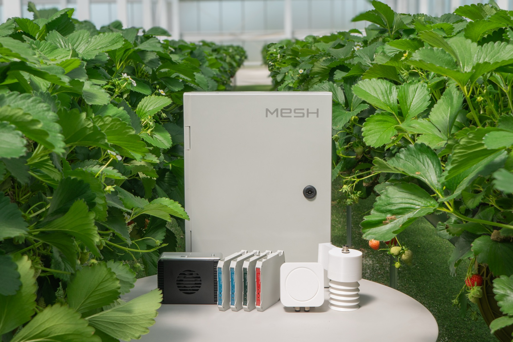

AXIS 01
금속구조물·창호·온실 시공
- 면허를 기반으로 공공공사 시장 진입
- 설계·견적·자재·시공·하자보수 일괄 관리
- 스마트팜·연구시설 외피 및 개보수
세 가지 실행축, 하나의 엔지니어링 회사
엔지니어링, 사업 자격, G2B 투찰 역량을 바탕으로 예산 발굴부터 현장 구축과 데이터 운영까지 연결하는 칼리온의 3축 사업계획입니다.

칼리온은 제품을 단순 재판매하는 회사가 아니라, 기획·제안·입찰·시공·구축·운영을 한 체계로 엮습니다.
2026년 6월 누적 매출은 약 2.2억원이며, GPU·서버 구축이 빠른 매출 전환을 만들고 MESH는 자체 제조·보급 기반을 유지하고 있습니다.
2026년은 회사 매출 전망, 2027~2028년은 경영 목표입니다. 수주잔고는 회계상 매출과 구분합니다.
웹사이트의 현재 메시지인 “Not just built. Engineered.”를 실제 사업 프로세스로 바꾸어야 합니다.
컨설팅 다음 공사가 다른 회사로 넘어가는 구조를 줄이고, 설계 의도와 현장 품질을 직접 책임집니다.
| 핵심 고객 | 지자체·교육청·연구기관·스마트팜 시행사 |
|---|---|
| 핵심 상품 | 창호 개보수, 금속구조물, 온실 외피·벤츠·레일·베드 |
| 수행 범위 | 현장조사 → 물량산출 → 자재·제작 → 시공 → 검수·하자 |
| 수익 구조 | 공사 도급 + 관급자재 조달 + 개보수·유지관리 |
진입 조건: 공사 실적·기술인력, A값·순공사원가·법정경비 검토, 현장 안전관리 표준화.
| 고객 | KAIST·출연연·대학·국방·기업 연구실 |
|---|---|
| 제품 | GPU 서버, 워크스테이션, GPU 증설, 스토리지·네트워크 |
| SW | Ubuntu, NVIDIA Driver, CUDA·cuDNN, Docker·Container Toolkit, MPI, Slurm, DCGM |
| 검수 | 라벨·P/N, GPU 인식, 온도·소비전력, 4시간 부하, 성능·로그 보고서 |
핵심 관리: 국내 정식 유통·OEM·병행수입·벌크 허용 조건을 공고별로 분리하고, QVL·AVL·서버 제조사 보증 유지를 입찰 전에 확정합니다.
농가 직접판매만으로는 성장에 한계가 있습니다. 시공사·자재사·지자체·연구기관이 보유한 고객·예산·사업에 MESH를 함께 넣습니다.
| 공동보급사 | 온실 시공사, 농자재·제어기 업체, 지역 SI·통신사 |
|---|---|
| 기관 고객 | 도 농업기술원, 스마트팜 혁신밸리, 시군 농업기술센터, 교육·연구기관 |
| 제공 가치 | 센서·제어·영상·영농일지 통합, AI-Ready 데이터, 현장 대시보드 |
| 수익 구조 | 초기 구축비 + 시스템 연계 + 정기점검·모델 운영·유지관리 |
고객은 데이터를 밖으로 보내기 싫어하고, 원천 데이터를 보유하고도 학습·분석하지 못합니다. 칼리온은 시설·서버·데이터를 함께 구축합니다.
창호·환기·베드 개선 + MESH 센서·모니터링 + 정기점검.
GPU 서버·스토리지 + JupyterHub·CUDA·MLflow + 검수·교육.
AI-Ready Data 전환 + 공동 GPU 학습 + 시군·농가 이용 서비스.
권장 구조: 도 단위·혁신밸리에 공동학습센터를 두고, 시군·농가는 웹·API로 결과를 이용합니다. 원천데이터 소유권은 기관에 유지합니다.
| 진단·기획 | 시설·데이터·AI 인프라 현황진단, ISP, 기본계획 |
|---|---|
| 규격·입찰 | 규격서, BOM, 제안서, 증빙·확약서, 투찰 검증 |
| 시공·조달 | 금속창호·온실, GPU·서버·스토리지, MESH |
| 통합·검수 | 현장 설치, SW 통합, 부하·성능·안전 검수 |
| 운영·유지 | 시설·GPU·데이터 모니터링, 장애, 백업, 모델 재학습 |
초기 가격은 데이터 규모, GPU 수량, 공사 범위, 유지보수 SLA에 따라 견적합니다.
나라장터·TEN·eBiz4u·민간 발주를 모니터링하고 지역·실적·면허를 먼저 검토합니다.
자재·GPU·설치·법정경비·납기를 확인하고 기초금액 내 수행 가능성을 판정합니다.
정품·기술지원, QVL·AVL, 법적 증명서와 규격대응표를 같이 완성합니다.
물품·공사의 낙찰방법, A값, 순공사원가, 보증을 별도 검증합니다.
설치·부하·안전 검수 후 유지관리, 증설, MESH 데이터 운영으로 확장합니다.
준비된 회사만 들어갈 수 있는 시장을 늘리고, 실행 위험은 입찰 전에 줄입니다.
자격 취득은 종료가 아니라 실제 수행·검사·기록·실적 확보로 완성됩니다.
면허와 자격만 나열하지 않고, 각자의 전문성을 제안·입찰·구축·검수 책임으로 연결합니다.
경영 의사결정과 계약 책임을 맡고, 금속창호·시설공사의 품질과 현장 수행 기준을 관리합니다.
사업기획, 제안·수주전략, GPU·서버 시스템 구성과 농업 인프라 통합을 총괄합니다.
입찰자격, 제출서류, 계약·행정 절차를 관리하고 현장 이해를 바탕으로 수행 문서를 정리합니다.
참여 가능한 시장을 자격으로 넓히고, G2B 투찰 역량으로 기회를 선별하며, 엔지니어링 수행력으로 계약을 실적과 재수주로 전환합니다.
| 사업·PMO | 선별, 고객·예산, 제안 전략, 참여 결정 |
|---|---|
| 입찰·계약 | 자격, 제출서류, 가격공식, 보증, 계약조건 |
| 조달·파트너 | 딜등록, 견적 유효기간, 재고·납기, 확약서 |
| 현장·인프라 | 시공, 전력·냉각, 서버·SW, 검수·안전 |
| MESH·데이터 | 커넥터, 품질, 학습·모델, 대시보드·운영 |
| 영역 | 위험 | 입찰 전 통제 |
|---|---|---|
| GPU | 딜보호, OEM·병행·벌크, 납기 | 증빙·재고·납기 서면 확정 |
| 서버 | 가용전력, 냉각, QVL·AVL, 보증 | 부품별 전력·BTU/h·호환성표 |
| 공사 | A값, 순공사원가, 안전, 복합공종 | 가격식 이중검수·현장조사 |
| MESH | 데이터 반출·권한·품질 | 온프레미스·비식별·접근기록 설계 |
| 공통 | 제안과 실제 납품품 불일치 | P/N·라벨·BOM 검수 후 발주 |
우리가 만들 회사
금속창호는 현장을 만들고, GPU·서버는 학습 인프라를 만들며, MESH는 데이터를 사업 자산으로 만듭니다.